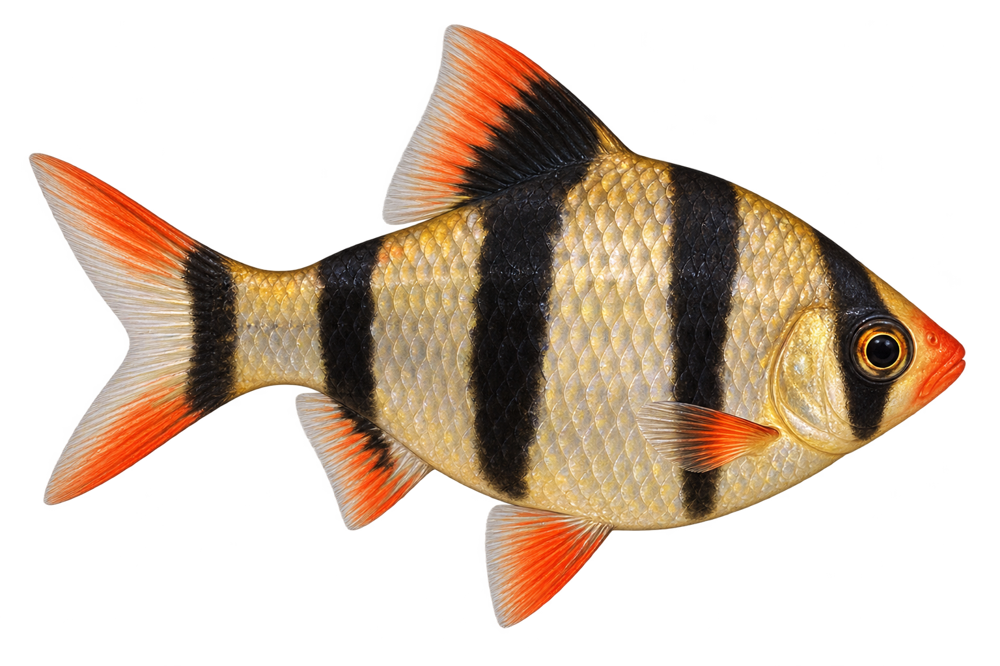
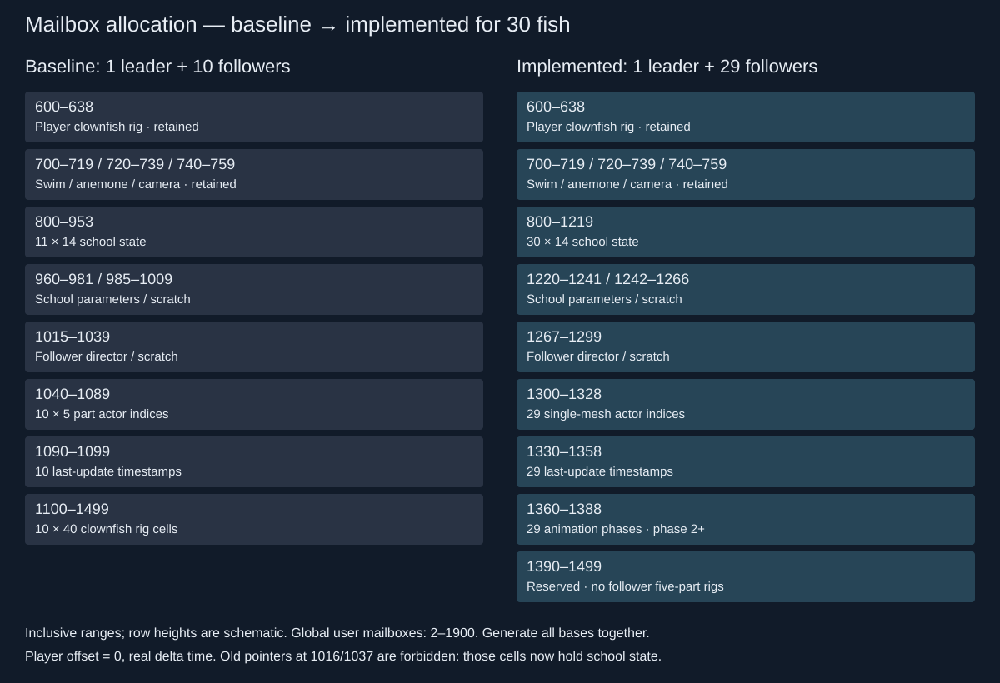

Reviewed concept mockups. All three mesh phases are implemented; actual captures and measured comparisons are in the plan. The barbs are proposed at 4.5–6 cm total length; the player is 8.89 cm.



Generated side-profile art; production alpha, UV and geometry checks passed; see actual game captures in the plan.
Open close previews and matching Chromecast captures
